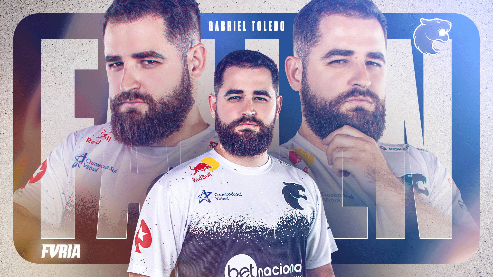

Olá bem vindo!
Aqui você pode ver e conhecer mais sobre mim e minhas habilidades

Sobre Mim
Gabriel Toledo de Alcântara Sguario (Itararé, 30 de maio de 1991), mais conhecido como FalleN, é um empresário e jogador profissional de Counter-Strike brasileiro. Atualmente joga pela FURIA. Em 2015 ele foi nomeado como a pessoa mais influente do esporte eletrônico brasileiro.
De acordo com diversos portais de notícias, FalleN é o profissional de esporte eletrônico brasileiro que mais lucrou em premiações. Estima-se que o valor total ganho por FalleN em premiações seja de 1,151 milhão de dólares, sendo 99% das premiações provenientes de campeonatos de Counter-Strike: Global Offensive e o restante de outros jogos, como Counter-Strike e CrossFire.
Ele também é conhecido por fundar uma plataforma de e-learning de jogos eletrônicos, a Games Academy, que mais tarde se fundiu à Gamers Club. Também possui uma linha de dispositivos periféricos chamada Fallen Gear, vendidos em sua própria loja e-commerce, a Fallen Store.